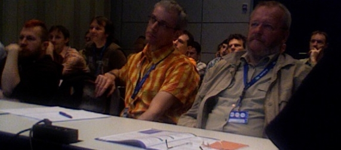

Editor's Note: Read the news story about the Audience Award for Innovation here.
Between April 23rd and 27th 2007 you could meet the NetBeans team at JAX, one of the largest and most important conferences for Java Enterprise technologies in Europe. The conference was held in the beautiful city of Wiesbaden, Germany, right around the corner from Frankfurt am Main.
Also present was Ramon Ramos from the governance board and well known in the community for his plug-in contributions. The NetBeans DreamTeam was represented by Adam Bien, who nominated the NetBeans GUI builder for the JAX innovation award. Germany is Eclipse-land... Would a NetBeans project appeal to the jury and win a prize? We were curious -- but like everybody else, we had to wait until Thursday to find out.
Luckily the waiting was eased by a full agenda: Just like its bigger brother JavaOne, JAX offers a wide range of workshops, keynotes, BOFs, and sessions. Each was given by a knowledgeable speaker such as Erich Gamma, Ivo Totev, David "I" Intersimone, Sun's Tim Boudreau and Roman Strobl, to name only a few.
After Tim Boudreau's keynote, developers flocked to Roman Strobl's "NetBeans: OpenSource Java IDE and More" session. Roman demonstrated user-friendly GUI building, heap walking and load generation with the new Profiler, and working with wizards. He concluded with an impressive demo of how to hook up Java SE, Java EE and Java ME with each other.
As always, Roman and Tim got to answer a whole lot of questions, for instance whether the IDE's GUI builder allowed for teamwork. Certainly -- When your team sticks to the usual model-view-controller paradigm, and separates the business logic from the GUI, then the NetBeans is for you. "However, although the long awaited two-way editing and reverse-engineering of Swing GUIs is in the works," Tim said, "stateful forms will remain impossible to reverse-engineer."
Another new feature that will make Java desktop application development easier is NetBeans IDE 6.0's support for the new Swing application framework. Roman showed how easy it is to create a database-driven application complete with data binding. The developers enjoyed his famous racing car demo which Roman showed as an example for action bean and visual bean integration. "This new framework is the perfect choice for a quick and easy application." Roman stated. For complex rich client applications on the other hand, Roman invariably recommended the NetBeans platform.
"Stepping onto the NetBeans Platform" also was the topic of Roman's second JAX session. "Relying on an existing platform allows you to focus on coding what matters", Roman explained, "Don't reinvent the wheel!" With that in mind, Roman quickly created a module that depended on an existing open-source library, and loaded it into the IDE. Similarly you can use a library wrapper module to turn a whole existing Swing application into a NetBeans module.
Why should you want to do that? Well, you get a professional, modular and easily updateable application including the IDE's full access to Java EE back-ends. Select an entry from the menu, and the IDE deploys your project as NBM module, as a JNLP webstart application, or as a zip file -- ready for distribution. What are the requirement for its commercial use you wonder? If you change parts of the platform source code, you have to publish these changes; your own business logic can remain proprietary.

Asked what was easier to use, NetBeans IDE or Eclipse IDE, Roman recommended to use NetBeans when Swing, Java ME, and Java EE integration is key. "Eclipse currently has the better editor." Roman admits, "In NetBeans IDE 6.0 however, editor performance will be greatly improved."
When the subject turned to the differences between the NetBeans platform and the Eclipse RCP, the platform expert Kai Tödter chimed in: "It really depends on your requirements. If Swing is a requirement, choose NetBeans. Eclipse on the other hand has a bigger community, and more books on the shelf." To that Roman added that a new NetBeans platform book will be ready for JavaOne, covering the latest platform API changes. He concluded "Now is a good time to start migrating your application to 6.0."
On Wednesday, an enthusiastic Adam Bien did a great job of introducing developers not only to the cool new stuff such as Java 3D. He also made sure to remind us of a whole set of "Useful but Forgotten" Java technologies.
Adam's Java3D demo proved that Java is a viable choice for 3D development, especially when platform-independence is a requirement. Plain Java3D is not intended to be used for 3D action games: It's main purpose is the development of 3D user interfaces. For game development Adam recommended Xith3D and the jMonkey Engine, which is also employed for Project Darkstar.
In Adam's next session we learned that not everything useful is automatically new: Adam pointed out several existing tools that would deserve more attention. These technologies were simply released 'before their time', or suffered from sub-optimal marketing: Among them is Sphinx (Java speech recognition), Jini/Apache River including Jiro and JavaSpaces (for distributed computing and services), and JXTA (an open source peer-to-peer platform).
Another very well attended session was Kai Tödter's comparison between the Eclipse RCP and the NetBeans Platform. He speaks from experience, since Kai has already created applications with both frameworks.
"Both platforms are very mature," begins Kai, "and basically offer the same features, for instance advanced window docking and help systems." One of the differences is that Eclipse follows the OSGi, while NetBeans modules come in the shape of NBM files -- JAR files with module relevant meta-information included. NetBeans comes with the best Java GUI builder that is currently available, and supports Look&Feel extensions such as the rough draft 'Napkin' look. Eclipse employs the high-fidelity SWT framework and runs a bit faster due to its use of native widgets, and has a bigger community providing lots of (sometimes too many) modules to choose from.
"In short, both platforms have more than you want," said Kai, "and either has to be tuned down by the developer." In NetBeans, you create a custom module, load it into the IDE, and then you deselect all the IDE specific modules that you don't need. In Eclipse you start out with a naked module and wrap additional functionality around it.
So which one to choose? "To answer that, define your requirements clearly!" recommends Kai. If a platform-independent Swing GUI is a requirement, choose NetBeans; if visual fidelity is a requirement (or if the application is e.g. Windows-only), then go for Eclipse. "Which ever you choose" adds Kai, "make sure to use the corresponding IDE for your platform development."
On Thursday evening, I rejoined Roman after the award ceremony. The NetBeans GUI Builder had not won the first prize... Instead, it won a prize that meant much more to us:
In a live ballot by show of hands, the developers present deemed the NetBeans GUI builder worthy of the Audience Award for Innovation. We made it! The prize money (1000 Euros) will be donated to the international charity Ärtze ohne Grenzen (Doctors Without Borders). Thanks to all of you for your support -- see you again next year at JAX'08!
PS: A community-initiated German localization of NetBeans IDE 5.5 is available!